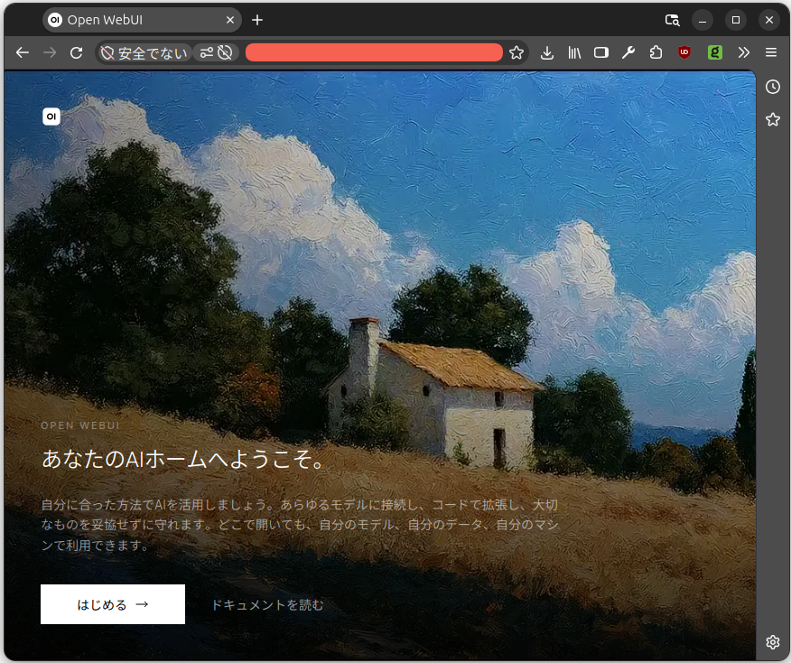

Ubuntu サーバで LLM 構築へ：（3）インストール編1

前々からやる気はあったのよ。 それこそ今年の春くらいから。 でも，何となく先延ばしにしてて，気づいたら秋。 そろそろ本気出そう！ というわけで自宅 LAN 上で LLM サーバ構築に着手することにした。
目次
要求スペック
まず，昨今の相場では高性能なマシンは用意できなかった点を頭に入れていただきたい。 マシンのスペックは以下の通り：
$ sudo lshw -C cpu
*-cpu
product: AMD Ryzen 7 5825U with Radeon Graphics
vendor: Advanced Micro Devices [AMD]
physical id: 1
bus info: cpu@0
version: 25.80.0
size: 1095MHz
capacity: 4547MHz
width: 64 bits
...
$ sudo lshw -short -C memory
H/W path Device Class Description
==============================================================
/0/0 memory 64KiB BIOS
/0/13 memory 16GiB System Memory
/0/13/0 memory 8GiB SODIMM DDR4 Synchronous Unbuffered (Unregistered) 2667 MHz (0.4 ns)
/0/13/1 memory 8GiB SODIMM DDR4 Synchronous Unbuffered (Unregistered) 2667 MHz (0.4 ns)
/0/15 memory 512KiB L1 cache
/0/16 memory 4MiB L2 cache
/0/17 memory 16MiB L3 cache
$ sudo lshw -short -C disk
H/W path Device Class Description
==============================================================
/0/100/2.4/0/0 hwmon3 disk NVMe disk
/0/100/2.4/0/2 /dev/ng0n1 disk NVMe disk
/0/100/2.4/0/1 /dev/nvme0n1 disk 512GB NVMe disk
$ cat /etc/issue
Ubuntu 26.04.1 LTS \n \l
メモリが16GBしかないのが痛すぎるのだが（しかもDDR4），使えるハードがあっただけでもよしとしよう。 メモリやプロセッサの高騰で，これ以上のスペックには手が出せなかった。
CPU-only の構成の場合，ボトルネックになるのは CPU の性能やコア数よりもメモリ容量と帯域幅らしい。 今回 Kagi Assistant と相談しながら作業したのだが「せめて DDR5, 32GB は欲しい」と言われてしまった。 なお，プロセッサ内蔵の GPU は非力すぎて使い物にならないとのこと。 これも「グラボを買え！」と言われてしまった。 色々足りなくてすみません 🙇
選定理由: 個人〜小規模LAN利用ではOllamaが最適。セットアップが最も簡単で，OpenAI互換APIを標準提供し，モデル管理が容易です。
- vLLMは同時接続ユーザーが多い（5人以上）本番運用向けで，単一ユーザーには複雑さが増すだけ
- llama.cppは低レベルすぎて管理が煩雑
モデルについては以下がオススメらしい（Ollama で設定可能なもの）2。
CPU-only・16GBの制約では，「速い軽量モデル」と「高品質だが遅いモデル」の使い分けが最適解です。
| 役割 | 推奨モデル | サイズ | 予想速度 | 特徴 |
|---|---|---|---|---|
| ブログ執筆・高品質チャット | Qwen3.5 9B | ~6.6 GB | ~2-4 tok/s | 16GB機では総合力が最も高い。コードチャット・デバッグ・技術質問に強い，長コンテキスト |
| 高速Q&A・下書き | Phi-4 Mini 3.8B | ~2.3 GB | ~6-9 tok/s | CPU最速クラス。ただしコンテキスト4K制限 |
| コード自動補完（FIM） | Qwen2.5-Coder 1.5B〜3B | ~1-2.5 GB | 20 tok/s超 | 2026年もFIM補完の定番 |
| Embedding（RAG） | nomic-embed-text | ~0.3 GB | 高速 | 従来どおり |
モデル選択のポイントは以下の通りだそうだ（Kagi Assistant の主張）。
- モデルは3B〜7Bに絞る — 13B以上はCPU-onlyでは実用的でない
- RAMは16GB以上推奨 — 8GBでも動くがモデル選択肢が狭い
- MoEモデル（35B-A3B）がゲームチェンジャー — RAMが32GBあれば品質と速度の両立が可能
- チャット用と補完用でモデルを分ける — 補完は1.5B〜3Bの軽量モデルで高速に
- DDR4の帯域幅制限は根本的に回避不可 — 将来的にGPU追加 or DDR5サーバへの移行も検討
最終的な構成は以下を目指している。
(推論エンジン)"] Models["Qwen3.5 9B (執筆)
Phi-4 Mini 3.8B (高速)
Qwen2.5-Coder 1.5B (補完)
nomic-embed-text (RAG)"] OpenWebUI["Open WebUI :8080
(GUIチャット v0.12.0)"] Ollama --- Models Ollama --- OpenWebUI end subgraph ClientUbuntu["Ubuntu PC"] ClineU["VS Code + Cline
(コーディング)"] TermU["ターミナル
ollama run (CUI)"] BrowserU["ブラウザ
Open WebUI"] end Ollama -- "Ollama API :11434" --> ClineU Ollama -- "Ollama API :11434" --> TermU OpenWebUI -- "Web UI :8080" --> BrowserU
というわけで，早速 Ollama をインストールしてみる。
Ollama をインストール・設定する
$ curl -fsSL https://ollama.com/install.sh | sh
>>> Installing ollama to /usr/local
>>> Downloading ollama-linux-amd64.tar.zst
######################################################################## 100.0%
>>> Creating ollama user...
>>> Adding ollama user to render group...
>>> Adding ollama user to video group...
>>> Adding current user to ollama group...
>>> Creating ollama systemd service...
>>> Enabling and starting ollama service...
Created symlink '/etc/systemd/system/default.target.wants/ollama.service' → '/etc/systemd/system/ollama.service'.
>>> Downloading ollama-linux-amd64-rocm.tar.zst
######################################################################## 100.0%
>>> The Ollama API is now available at 127.0.0.1:11434.
>>> Install complete. Run "ollama" from the command line.
>>> AMD GPU ready.
$ sudo systemctl status ollama
● ollama.service - Ollama Service
Loaded: loaded (/etc/systemd/system/ollama.service; enabled; preset: enabled)
Active: active (running) since Thu 2026-10-15 00:27:00 UTC; 21min ago
Invocation: bd9cb4ba25e14f4a8ccd4e07678238dd
Main PID: 7396 (ollama)
Tasks: 17 (limit: 14526)
Memory: 13.3M (peak: 44.4M)
CPU: 395ms
CGroup: /system.slice/ollama.service
└─7396 /usr/local/bin/ollama serve
$ curl http://localhost:11434/api/version
{"version":"0.40.4"}
上述の通り，最後に REST API を叩いてバージョン情報が返ればインストール成功。
ただし，このままでは localhost しか使えないので，設定を変更する。
$ sudo systemctl edit ollama.service
これでエディタが開くので，以下の記述を追加して保存する。
追加した設定は /etc/systemd/system/ollama.service ファイルではなく /etc/systemd/system/ollama.service.d/override.conf ファイルに保存される（ollama.service ファイルを直接編集しないこと）。
[Service]
# 0.0.0.0 ではなく，サーバのLAN IPを指定
Environment="OLLAMA_HOST=192.168.1.10:11434"
Environment="OLLAMA_NUM_THREADS=8"
Environment="OLLAMA_MAX_LOADED_MODELS=1"
OLLAMA_HOST にはバインドする IP アドレスとポート番号を指定する。
OLLAMA_NUM_THREADS には使用する全CPUスレッドではなく，物理コア数を設定するのがいいらしい。
今回のプロセッサは8コア×2スレッドなので 8 をセットする。
OLLAMA_MAX_LOADED_MODELS には同時にロードするモデルの最大数を指定するのだが，メモリに余裕がないので 1 をセットしている。
Ollama がバージョンアップしたらどうするの？ って AI に訊いたら https://ollama.com/install.sh を再実行すればいいらしい。
Windows や macOS は自動更新の仕組みがあるそうなのだが Linux は手動で更新する必要がある。
サービスを再起動して動作確認する。
$ sudo systemctl daemon-reload && sudo systemctl restart ollama
$ sudo systemctl status ollama
● ollama.service - Ollama Service
Loaded: loaded (/etc/systemd/system/ollama.service; enabled; preset: enabled)
Drop-In: /etc/systemd/system/ollama.service.d
└─override.conf
Active: active (running) since Thu 2026-10-15 01:30:19 UTC; 1min 19s ago
Invocation: 877f8637d54d4eb5b793825ff9a89c2e
Main PID: 7943 (ollama)
Tasks: 18 (limit: 14526)
Memory: 15.6M (peak: 43.6M)
CPU: 365ms
CGroup: /system.slice/ollama.service
└─7943 /usr/local/bin/ollama serve
$ curl http://localhost:11434/api/version
curl: (7) Failed to connect to localhost port 11434 after 0 ms: Could not connect to server
$ curl http://192.168.1.10:11434/api/version
{"version":"0.40.4"}
localhost では接続できず，バインドした LAN IP で接続できることを確認する。
続けてモデルをダウンロードしよう。
ダウンロードには ollama コマンドを使う。
$ OLLAMA_HOST=http://192.168.1.10:11434 ollama --version
ollama version is 0.40.4
$ OLLAMA_HOST=http://192.168.1.10:11434 ollama pull qwen3.5:9b
$ OLLAMA_HOST=http://192.168.1.10:11434 ollama pull phi4
$ OLLAMA_HOST=http://192.168.1.10:11434 ollama pull qwen2.5-coder:1.5b
$ OLLAMA_HOST=http://192.168.1.10:11434 ollama pull nomic-embed-text
$ OLLAMA_HOST=http://192.168.1.10:11434 ollama list
NAME ID SIZE MODIFIED
nomic-embed-text:latest 0a109f422b47 274 MB 10 seconds ago
qwen2.5-coder:1.5b d7372fd82851 986 MB 2 minutes ago
phi4:latest ac896e5b8b34 9.1 GB 4 minutes ago
qwen3.5:9b 56671c2ab938 6.6 GB 18 minutes ago
環境変数 OLLAMA_HOST で接続先を指定して ollama コマンドを実行すること（バインドする IP アドレス毎に構成が独立しているため）。
ollama list で現在ロードされているモデルを確認できる。
Open WebUI をインストール・設定する
さて，動作確認用に GUI チャットを設定してみよう。 GUI チャットとして Open WebUI がいいらしい。
Open WebUIはOllamaと最もポピュラーな組み合わせのWebチャットUIです。
| 機能 | 説明 |
|---|---|
| ChatGPT風UI | ブラウザでチャット，使い慣れたインターフェース |
| 会話履歴 | すべての会話を保存・検索可能 |
| モデル切替 | ドロップダウンでモデル切替 |
| ドキュメントRAG | ファイルをアップロードして対話 |
| ユーザー管理 | 複数ユーザー・アクセス制御 |
| 完全オフライン | 外部へのデータ送信なし |
Open WebUI は Python で実装されているのだが，困ったことに Python 3.13 以降のバージョンに対応していないらしい。
インストール方法については公式は Docker を使った方法を推奨しているが，今回は Python (pip/uv) を使う。
まずは uv のインストール。
$ curl -LsSf https://astral.sh/uv/install.sh | sh
downloading uv 0.13.1 x86_64-unknown-linux-gnu
installing to /home/username/.local/bin
uv
uvx
everything's installed!
To add $HOME/.local/bin to your PATH, either restart your shell or run:
source $HOME/.local/bin/env (sh, bash, zsh)
source $HOME/.local/bin/env.fish (fish)
~/.local/bin ディレクトリにパスが通っていることを確認すること。
次に ~/.open-webui-venv ディレクトリ以下に Python 3.11 の仮想環境を作る。
$ uv venv --python 3.11 ~/.open-webui-venv
Using CPython 3.11.17
Creating virtual environment at: .open-webui-venv
Activate with: source .open-webui-venv/bin/activate
$ source ~/.open-webui-venv/bin/activate
CUDA ライブラリ混入を防ぐため，先に CPU版 PyTorch をインストールする。
$ uv pip install torch --index-url https://download.pytorch.org/whl/cpu
Using Python 3.11.17 environment at: .open-webui-venv
Resolved 10 packages in 743ms
Prepared 10 packages in 18.55s
Installed 10 packages in 223ms
...
$ uv pip list | grep torch
Using Python 3.11.17 environment at: .open-webui-venv
torch 2.14.1+cpu
バージョン情報に +cpu が付いていればOK。
これでやっと Open WebUI がインストールできる。
$ uv pip install open-webui
Using Python 3.11.17 environment at: .open-webui-venv
Resolved 242 packages in 3.49s
Prepared 232 packages in 58.95s
Installed 232 packages in 138ms
...
続けて Open WebUI をサービス化する。
以下の内容で /etc/systemd/system/open-webui.service を作成する。
[Unit]
Description=Open WebUI
After=network.target ollama.service
[Service]
Type=simple
User=username
WorkingDirectory=/home/username/.open-webui
Environment="DATA_DIR=/home/username/.open-webui"
ExecStart=/home/username/.open-webui-venv/bin/open-webui serve --host 192.168.1.10 --port 8080
Restart=always
[Install]
WantedBy=multi-user.target
サービスを起動するよ。
$ sudo systemctl daemon-reload
$ sudo systemctl enable --now open-webui
$ sudo systemctl status open-webui
● open-webui.service - Open WebUI
Loaded: loaded (/etc/systemd/system/open-webui.service; enabled; preset: enabled)
Active: active (running) since Thu 2026-10-15 11:33:10 UTC; 34min ago
Invocation: 54cfc423eb78415886855db79339850a
Main PID: 1664 (open-webui)
Tasks: 65 (limit: 14526)
Memory: 998.3M (peak: 1.1G)
CPU: 31.076s
CGroup: /system.slice/open-webui.service
└─1664 /home/username/.open-webui-venv/bin/python /home/username/.open-webui-venv/bin/open-webui serve --host 192.168.1.10 --port 8080
これでブラウザで http://192.168.1.10:8080 が表示されればOK。


（調べながらとはいえ）ここまでで1日かかっちゃったよ。 ツールの選定は AI に任せたけど，実際の作業は結構試行錯誤したし。
続きはまた後日ということで。